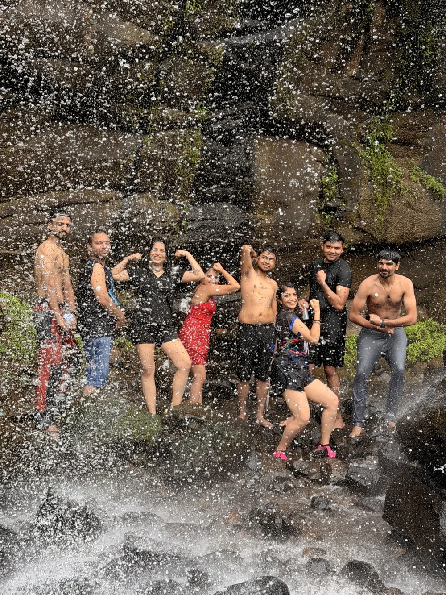
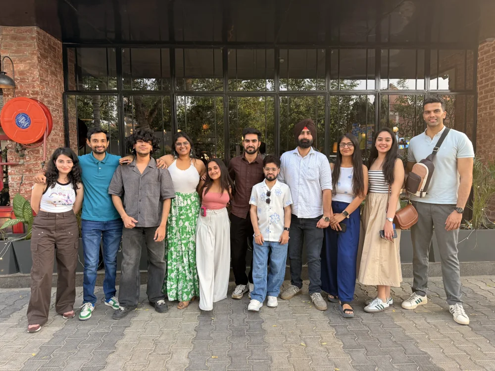

01
Find your people.
A shared experience can be the start of a beautiful friendship.
New places feel even better with people who get you. Travel, connect and make room for a little more life with our Type 1 diabetes community.


Maybe you’re here for adventure. Maybe for the people.
Maybe you’re simply curious about what happens when you try something new.
Whatever brings you here,
there’s room for your story.
Some things won’t fit in your suitcase.
They come home with you anyway.
A shared experience can be the start of a beautiful friendship.

The kind you’ll still be talking about long after you unpack.
A little curiosity is enough to start a conversation.
New places. New experiences. A chance to surprise yourself.

Step outside the everyday. Make room for your own kind of joy.

Come as you are, with people who understand this part of life.
The conversations that need no explanation. The laughter between plans. The freedom to just be yourself.
New trips will be shared here once the details are ready. Until then, tell Anurati what you’re hoping to explore.
Let’s talk about your next tripFrom the photo albumSalt in the air. Friends in the frame. A few moments from the LLWI photo album.
From the photo albumRiverside pauses, forest paths and a whole lot of fresh air. Explore our outdoor photo album.
From the photo albumShared tables, familiar smiles and room for one more. These are the moments between the adventures.
You don’t have to know anyone. You don’t have to have it all figured out. Sometimes, the first step is simply saying hello.
Your questions, answeredStart with a WhatsApp message to Anurati. Ask anything. No obligation to book.
Get to know the plans, the people behind them, and what to expect.
Confirm the details, plan for your needs, then get ready for new memories.
The people make the place.Anurati brings people together through Living Life With Insulin. Alongside the organising team, she helps turn the idea of travelling together into a shared experience, with connection at its heart.
Have a question, a little hesitation, or a place you’d love to go? She’s your first hello.
Get to know LLWIAbsolutely. You do not need to have joined an LLWI trip before. Start by saying hello to Anurati, ask whatever is on your mind, and find out whether an upcoming experience feels right for you.
Yes. You do not need to bring a friend or know someone in the group beforehand. Ask Anurati how introductions and group arrangements will work for the trip you are considering.
Talk to Anurati about the specific itinerary, meal timings, activity demands, storage arrangements and support available. These details should be confirmed for each trip. Community support does not replace your personal diabetes management or medical care.
Your message goes to Anurati on WhatsApp. You can ask about the trips, the community and anything you want to understand before deciding. Saying hello does not commit you to booking.
New places. New friendships. New stories.
Perhaps a little more confidence in yourself, too.